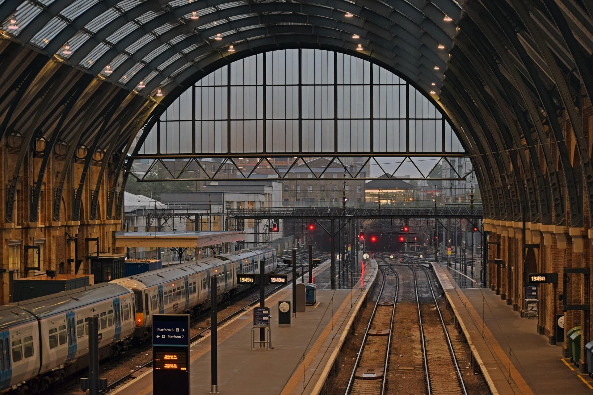
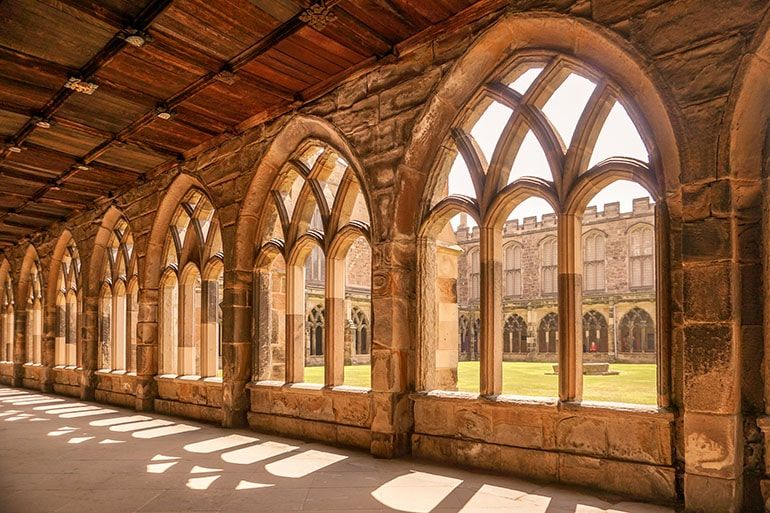
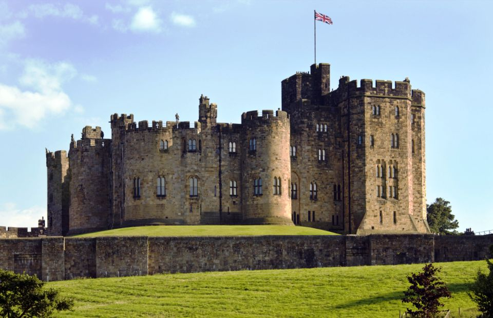
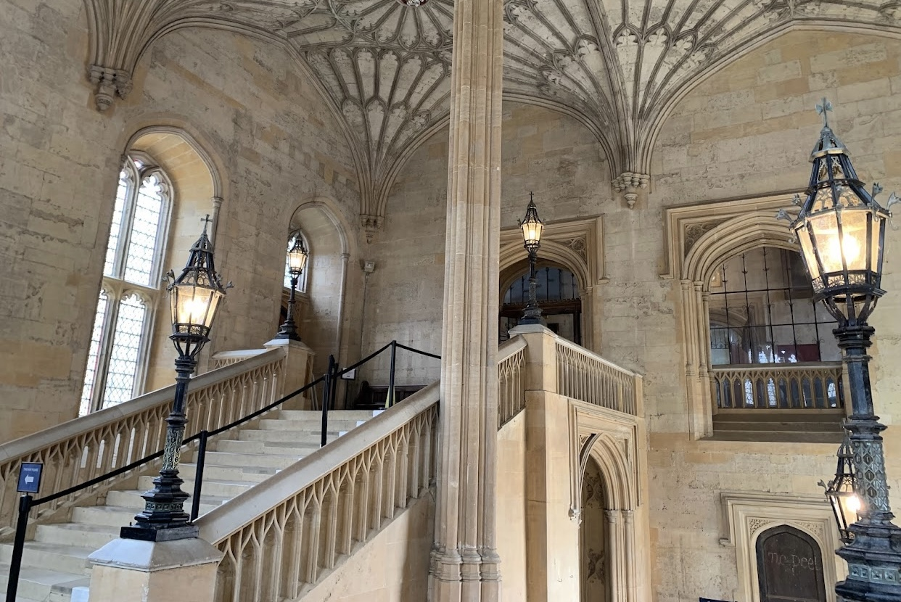
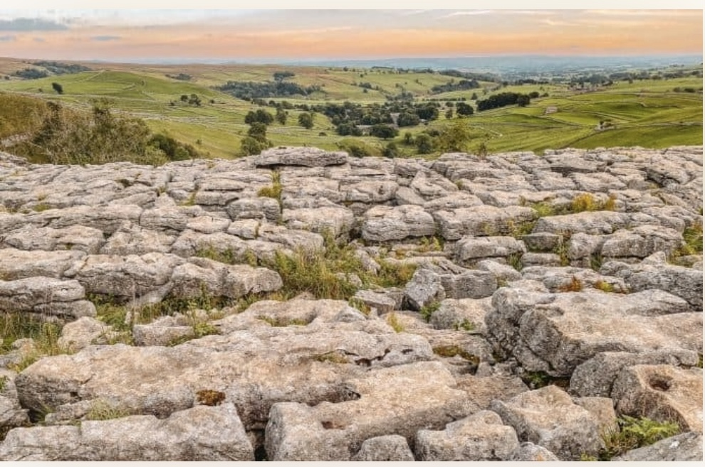
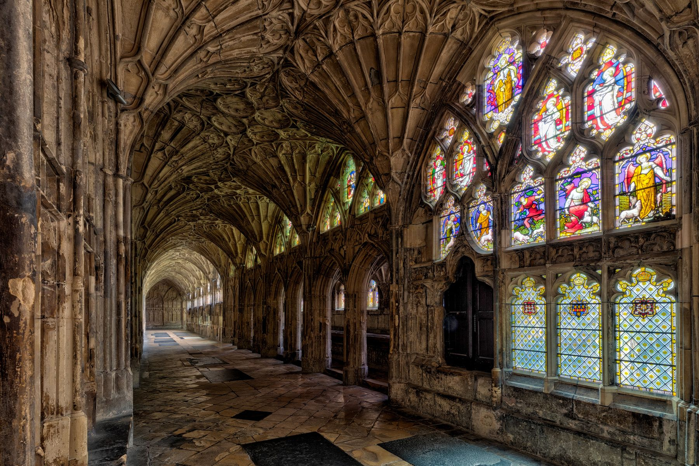
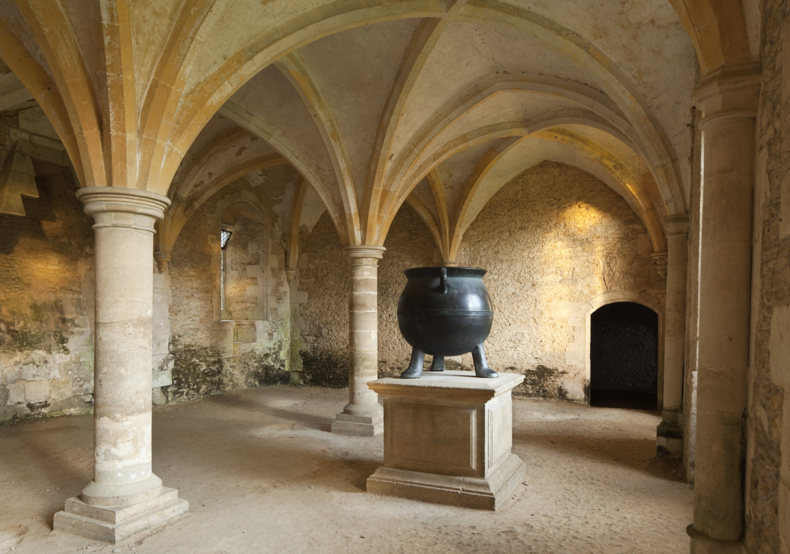
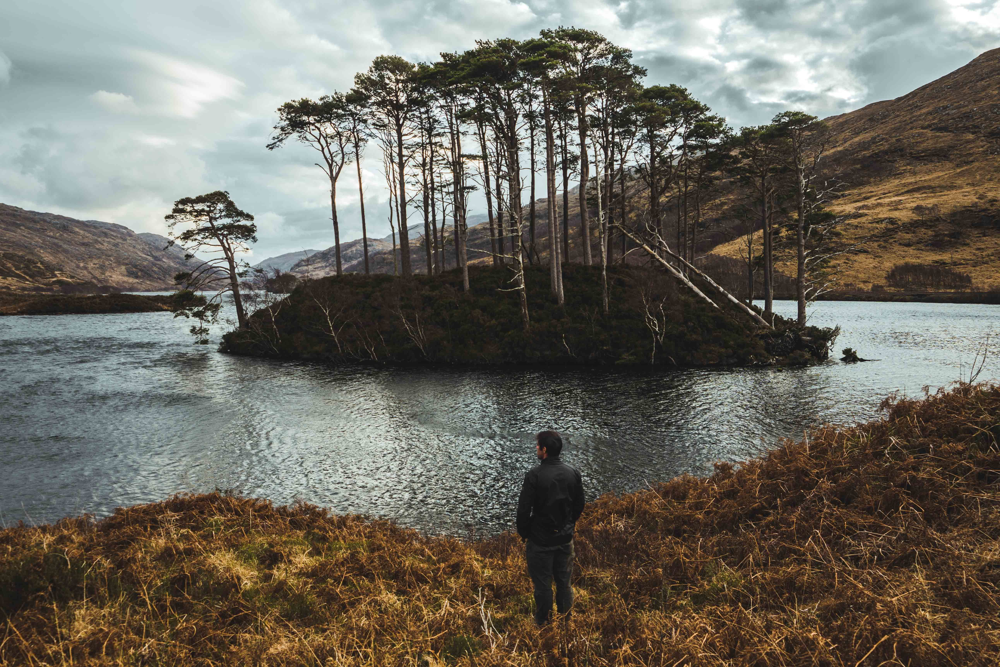

Why Visit The Filming Locations?
Return Home To Hogwarts
The Wizarding World of Harry Potter holds an irresistible charm for
people of all ages and backgrounds, drawing them to the magical
locations that inspired J.K. Rowling's creation of Hogwarts and
other enchanting places. These sites serve as a bridge between
reality and fantasy, where visitors can immerse themselves in the
same landscapes and architecture that breathed life into the beloved
movie series.
Most of these enchanting locations are scattered across the UK,
Scotland, and Ireland. Edinburgh inspired names and atmospheres in
Harry Potter, while Scotland's Glenfinnan Viaduct became the iconic
backdrop for the Hogwarts Express. These destinations offer fans a
chance to explore the magic and natural beauty of these regions,
stepping into the world of their favorite characters.
Locations
Explore Top Magical Locations
King's Cross Station
Platform 9 3/4 was filmed here. Best visited on September 1st for back to Hogwarts day.
Address:
Euston Rd., London N1 9AL, United Kingdom
Durham Cathedral
Hogwarts Halls were filmed there and Minerva McGonagall's classroom as well.
Address:
Durham DH1 3EH, United
Kingdom
Alnwick Castle
Used as Hogwarts in the first two films, Harry Potter and the Sorcerer's Stone and the chamber of secrets.
Address:
Alnwick NE66 1NQ, United
Kingdome
Christ Church
Hogwarts Library, the Yule ball practice room, Hogwarts stairs, , and Hogwarts courtyard were filmed here.
Address:
St. Aldate's, Oxford OX1 1DP, United Kingdom
Malham Cove
This is where Hermione and Harry Apparate to after Ron leaves in the HP and the deathly hollows part 1.
Address:
Malham, Skipton BD23 4DJ, United Kingdom
Gloucester Cathedral
In this cathedral is where the famous Hogwarts halls were filmed in most of the films.
Address:
12 College Grn. Gloucester GL1 2LX, United Kingdom
Lacock Abbey
Hogwarts' classrooms and the village of Budleigh Babberton were filmed here.
Address:
Lacock, Chippenham SN15 2LG, United Kingdom
Loch Eilt
This is where headmaster Albus Dumbledore was buried after his death at the end of the half-blood prince.
Address:
Lochailort PH38 4LZ, United Kingdom